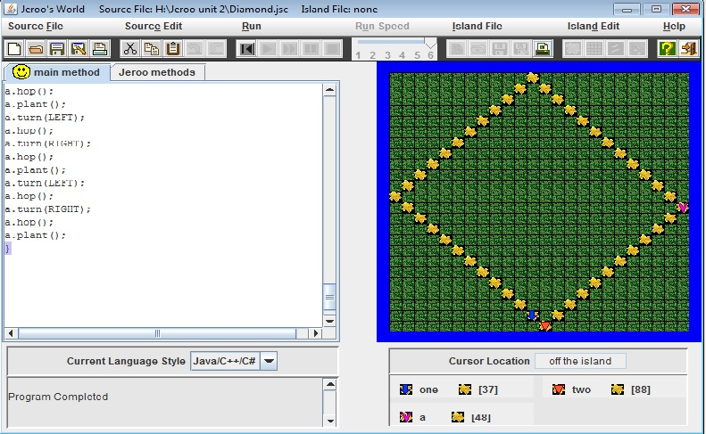
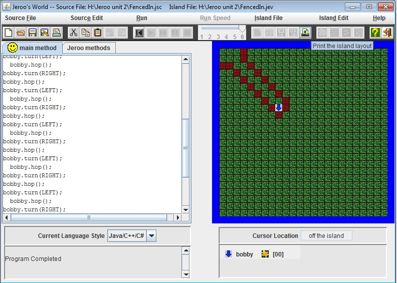
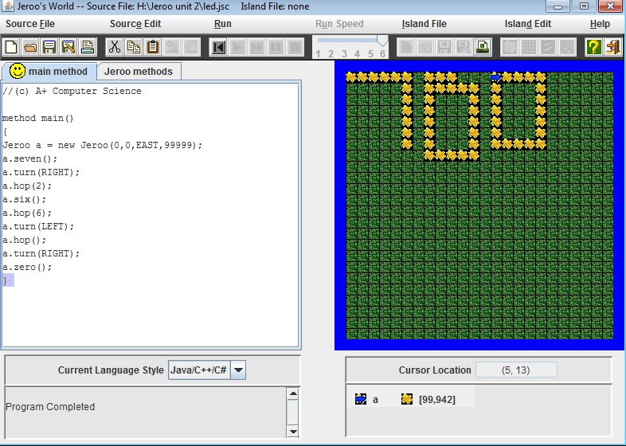
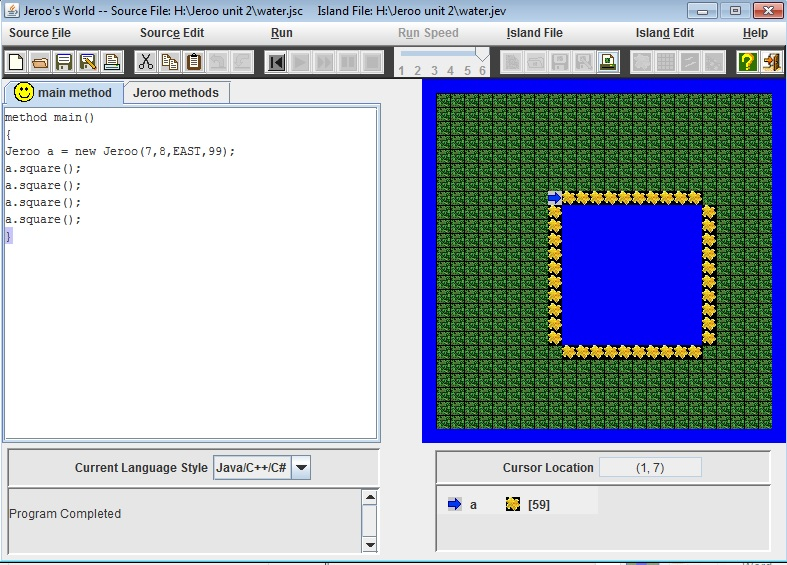
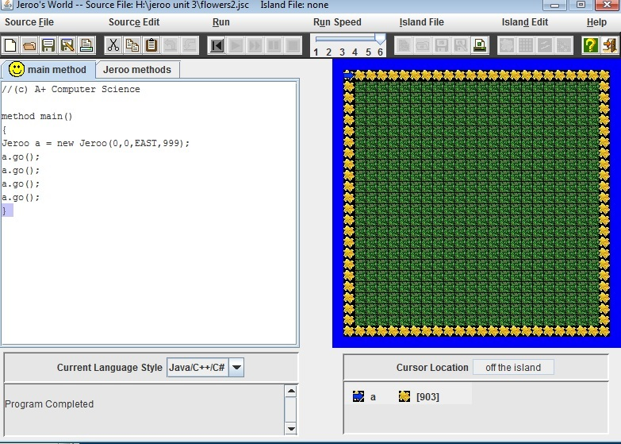
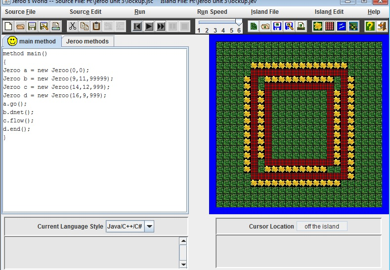
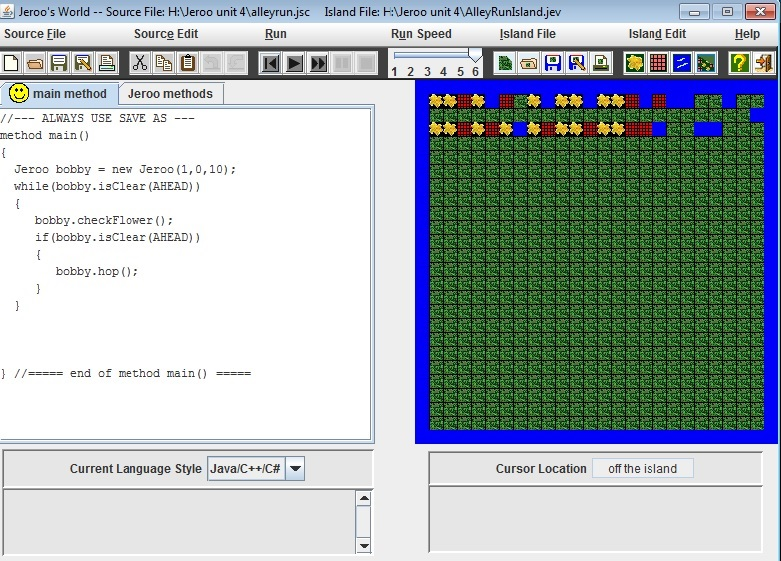

In unit 1 of Jeroo I learned how to make an arrow move across the screen and pick up flowers.
Diamond Project
In This you were supposed to make a Jeroo plant flowers in a diamond. You could multiple Jeroos. I copied and paseted code to make the Jeroo move.

Fencedin
In this project we had to manuver a Jeroo to the bottom of the maze. I learned how to make the Jeroo move and Turn.

Unit 2
In unit 2 I learned how to create Jeroo methods. I also learned how to combine methods.
LED
In LED I learned ho make a Jeroo method inside of a Jeroo method. You had to create numbers that would form part of you phone number. I did my area code.

Water
In this one you had to place flowers around a body of water. I learned how to make a Jeroo plant flowers. I also learned how to make a Jeroo have flowers.

Unit 3
In unit 3 I learned how to create if statements. I also lerarned ho to make something loop.
Flowers 2
This is where you make a program where the Jeroo plants around the island. I used the if is clear statement.

Lock Up
Lock up is where you get 3 Jeroos out of a box and take everything out.I used if net ahead and if net here statements.

Unit 4
In this unit we made the Jeroo look different ways to check, and make sure that it is clear.
Alley run
In this the Jeroo looks left and right. If there is a flower it picks it up and then goes back to the middle. Then the Jeroo
